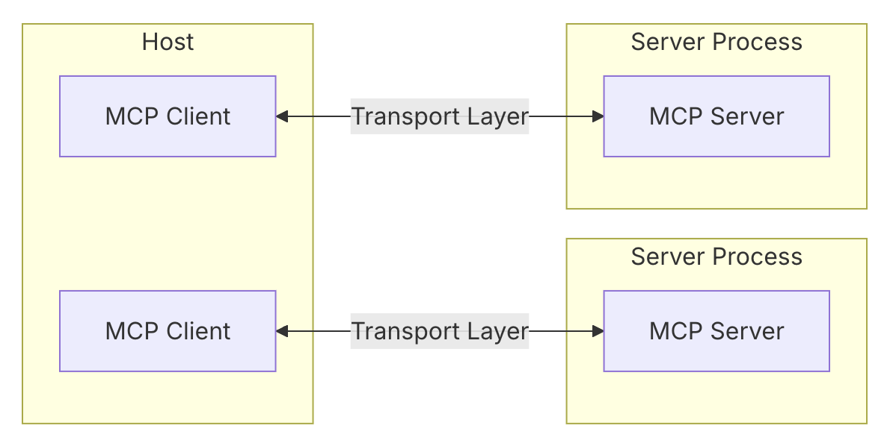

Stateless - pas de mémoire persistante entre les appels
Les fonctions transforment un modèle en agent capable d'agir
// Définition d'une fonction
{
"name": "get_weather",
"description": "Obtenir la météo",
"parameters": {
"location": {
"type": "string",
"description": "La ville"
}
}
}
Le défi de l'intégration des fonctions
Problèmes actuels:
Nécessite de modifier le serveur d'inférence
Couplage fort entre LLM et fonctions
Difficulté pour ajouter de nouvelles capacités
Besoin d'une approche standardisée
Solutions:
Plugins/Add-ons: Architecture extensible
API standardisées: Découplage
MCP: Protocole universel
Passage de l'intégration à l'interopérabilité
Et c'est exactement ce que résout le Model Context Protocol (MCP)!
La solution: MCP, la lingua franca des agents IA
L'architecture MCP en un coup d'œil

Hôte : ChatGPT, Claude, etc. qui contient le modèle de langage
Client MCP : "traducteur universel" entre l'IA et les outils
Serveurs MCP : exposent différents outils et capacités
MCP rend les outils numériques visibles et utilisables par n'importe quelle IA
MCP: Le langage universel des outils pour IA
Lancé fin 2024 par Anthropic, rapidement adopté
Un standard ouvert permettant aux IA de découvrir et d'utiliser des outils externes de manière autonome et standardisée
Donne un mode d'emploi autodescriptif pour chaque fonction
Les IA deviennent enfin agents capables d'agir!
{
"function_name": "get_weather",
"description": "Récupère la météo pour un lieu.",
"arguments": [
{
"name": "location",
"type": "string",
"description": "La ville à consulter."
}
]
}
Les 3 super-pouvoirs que MCP donne aux outils
Le trio magique du MCP
👁️ 1. Resources
Les yeux de l'IA
Accès en lecture aux données
Ex: lire un profil, consulter un prix
✋ 2. Actions
Les mains de l'IA
Modifier l'environnement
Ex: envoyer un email, réserver
🧠 3. Prompts
Le mode d'emploi
Guide l'IA dans l'utilisation
Le composant souvent négligé mais crucial!
C'est l'association des trois qui crée la vraie puissance!
La règle des 3U: créer des outils que les IA utiliseront vraiment
🎯 Useful (Utile)
Résout un vrai problème
Apporte une valeur unique
A un but clair
🔌 Usable (Utilisable)
Techniquement accessible
Suit le standard MCP
Interface bien définie
👆 Used (Utilisé) - Le plus souvent négligé!
L'IA choisit réellement d'utiliser votre outil
Clarté des noms, descriptions et exemples
Les Prompts MCP sont la clé du succès ici
MCP: Les API REST du futur
Une analogie puissante
🧑💻 API REST = révolution du Web
Pour les humains
A propulsé les applications web
Interfaces pour les développeurs
🤖 MCP = révolution des agents
Pour les IA
Va propulser les agents autonomes
Interfaces pour les modèles de langage
API REST
MCP
GET (lecture)
Resources (lecture)
POST (action)
Actions (action)
n'existe pas
Prompts (guide)
Comment passer à l'action avec MCP
MCP aujourd'hui: déjà une réalité
🚀 Adoption rapide:
Standard adopté par tous les grands acteurs: Anthropic, OpenAI, Google
Momentum croissant dans l'industrie du logiciel
Intégrations multiplateformes en cours
🛠️ Où le voir en action:
Outils dev: Claude Code, Cursor, GitHub Copilot
Plateformes: Salesforce Einstein, ServiceNow
Systèmes internes: Bases de connaissances, CI/CD
⚠️ Le moment critique: être présent dès maintenant
Les premiers à maîtriser MCP créeront les outils qui deviendront incontournables
Comment démarrer concrètement avec MCP
🏁 Plan d'action en 4 étapes:
Identifier un cas d'usage à fort impact
Prototyper un serveur MCP simple
Tester avec des utilisateurs réels
Itérer en mesurant l'utilisation
✅ Premiers cas d'usage idéaux:
Accès à des connaissances internes
Automatisation de tâches répétitives
Requêtes SQL en langage naturel
Intégration avec outils métier existants
Bonne nouvelle: MCP coexiste parfaitement avec vos API REST actuelles!
Demain et après-demain: ce qui nous attend
La feuille de route du MCP
🔮 Prochaines évolutions:
Notifications asynchrones - pour les tâches longues
Communication inter-agents (A2A)
Écosystèmes dédiés par industrie
Standards d'interface évolués
⚠️ Défis à résoudre:
Sécurité - authentification et permissions
Gouvernance - qui peut créer quels outils?
Design pour IA - nouvelle expertise
Découvrabilité - trouver les bons outils
Phase actuelle: Construction (II/III)
I. Genèse
✅ Terminée
II. Construction
🔄 En cours
III. Écosystème
⏳ Futur
Ce qu'il faut retenir pour demain
La troisième vague de la révolution numérique
1990-2010
🖥️
Web & API REST
Services accessibles depuis chez soi
2010-2020s
📱
Mobile & Apps
Services accessibles partout
2024-2030
🤖
Agents IA & MCP
Délégation cognitive des tâches
<MCP sera aux agents IA ce que les API REST ont été au Web
3 clés pour réussir avec MCP
🔑
1. Le nouveau standard
MCP est aux agents IA ce que REST a été au Web
Intégrez-le maintenant dans votre stratégie
👁️
2. L'affordance pour IA
Un outil doit guider l'IA sur quand et comment l'utiliser
Les prompts sont le mode d'emploi
🎯
3. Les 3U
Useful (Utile) Usable (Utilisable) Used (Utilisé)
Le dernier est le plus souvent négligé
Votre plan d'action
📋 À court terme (1-3 mois)
Former vos équipes aux concepts MCP
Identifier 1-2 cas d'usage à fort impact
Créer un prototype simple de serveur MCP
🔍 À moyen terme (3-6 mois)
Déployer un premier outil MCP en production
Créer des prompts MCP efficaces
Établir des guidelines d'affordance pour IA
🚀 À long terme (6-12 mois)
Développer une stratégie MCP d'entreprise
Créer un écosystème d'outils interopérables
Explorer les notifications asynchrones
⭐ Le conseil clé
Commencez petit, mesurez l'usage, et itérez rapidement!
Un seul outil MCP bien conçu vaut mieux que dix outils négligés.